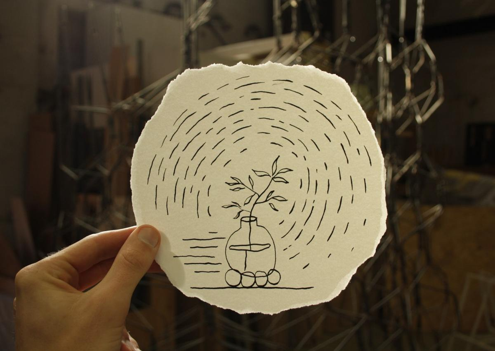

Principles and practices
For the next six months (from January to June 2020), I'll follow the Fab Academy at Fab Lab Barcelona. The FabAcademy is an intensive program to learn how to design and prototype projects using digital fabrication tools and machine, such as: computer-controlled cutting, electronics, 3D scanning and printing, electronics design,computer-controlled machining, embedded programming, molding and casting, networking and communications, mechanical design, interface and application programming and machine design.
I've a background in graphic & web design and web development and I love to imagine and build experiences for the common using open-source tools. But working in the web industry, I got a little bored of building things from a computer to another. I started to feel the need of working with tangible materials. I want to learn how to repair the old instead of creating the new, to think about our energy consumption, to (re)think about how we use our tools in the everyday life and what it means, and to dedicate my practice to nature.
Final project proposal
As part of the academy, I was asked to think about a personal project that represents all the techniques I will learn. I have had something in mind for some time and this academy can offer me the tools to do my research. Let me explain it to you.
I am fascinated by nature, by all the plants and their survival mechanisms, all the means they find to perpetuate their species. I would like to understand them better and to invite more people to take a closer look, to take more interest in this absolutely incredible ecosystem in which we all live.
What if we could have a tangible way to visualize how plants communicate, a way to understand them more easily? Would we respect them more?
